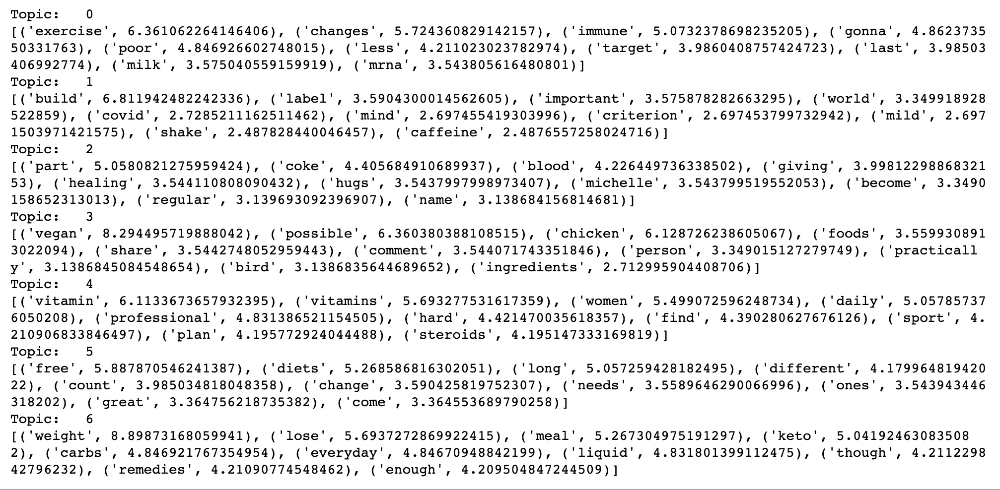
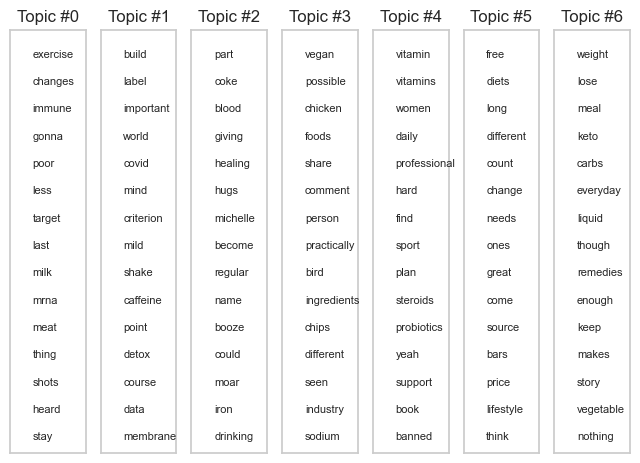
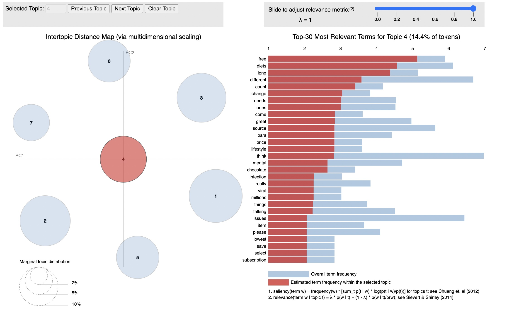

Latent Dirichlet Allocation (LDA) is a probabilistic topic modeling technique that can be used to identify hidden topics or themes in a large corpus of text data. It assumes that each document in the corpus is a mixture of several topics, and that each topic is a probability distribution over a set of words. In the context of Twitter data related to supplement intake, we can apply LDA to identify the underlying topics or themes that are discussed in the tweets. We can use LDA to identify the most important words or phrases that are associated with each topic, as well as the distribution of topics across the tweets in the dataset.
To apply LDA, we first need to preprocess the data by cleaning and tokenizing it, and then represent it as a bag of words or term frequency-inverse document frequency (TF-IDF) matrix. We can then apply LDA to the matrix to identify the topics and their associated words. LDA works by iteratively assigning each word in each document to a topic, and then updating the topic assignments based on the probabilities of the words and topics. Once we have identified the topics and their associated words, we can use them to better understand the underlying themes in the Twitter data related to supplement intake. For example, we might discover that there are topics related to the health benefits of supplements, the potential side effects of supplements, and the effectiveness of different types of supplements. We can also use the distribution of topics across the tweets to identify trends or patterns in public opinions and attitudes towards supplement intake. Overall, LDA is a powerful technique for identifying hidden topics or themes in large text datasets, and can provide valuable insights into public opinions and attitudes towards supplement intake on Twitter.
Data Gathering:
- Used Count vectorized data: cluster_datav2.csv
Link to the dataset: Dataset
Topic modeling is a text analysis technique that aims to identify latent topics or themes in a corpus of text data. It involves identifying patterns of word usage across different documents and clustering these patterns into topics that reflect underlying themes in the data. In the context of Twitter data related to supplement intake, topic modeling can be used to identify the underlying topics or themes that are discussed in the tweets. By identifying these themes, we can gain a better understanding of public opinions and attitudes towards supplement intake, as well as the factors that drive these opinions. To apply topic modeling, we first need to preprocess the data by cleaning and tokenizing it, and then represent it as a matrix of term frequencies or other features. We can then apply a clustering algorithm, such as Latent Dirichlet Allocation (LDA) or Non-Negative Matrix Factorization (NMF), to identify the underlying topics. Once we have identified the topics, we can use them to better understand the underlying themes in the Twitter data related to supplement intake. For example, we might discover that there are topics related to the health benefits of supplements, the potential side effects of supplements, and the effectiveness of different types of supplements. We can also use the distribution of topics across the tweets to identify trends or patterns in public opinions and attitudes towards supplement intake. Overall, topic modeling is a valuable technique for identifying latent topics or themes in large text datasets, and can provide valuable insights into public opinions and attitudes towards supplement intake on Twitter.
- 
The Intertopic Distance Map (via multidimensional scaling) is a visualization tool used to display the relationships between topics in a topic model. Each point on the map represents a topic, and the distance between the points reflects the similarity or dissimilarity between the topics.
The count vectorizer matrix represents documents and columns representing terms (such as "free", "diets", "long", "different",...).